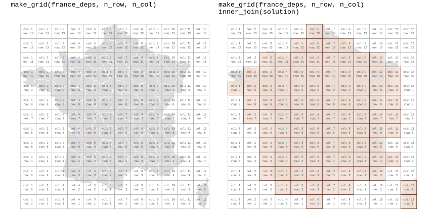
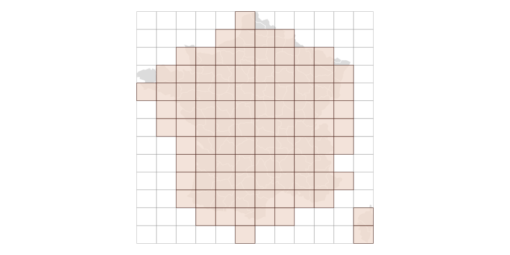
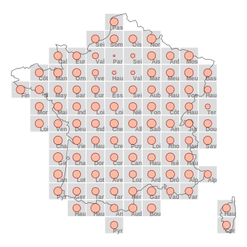
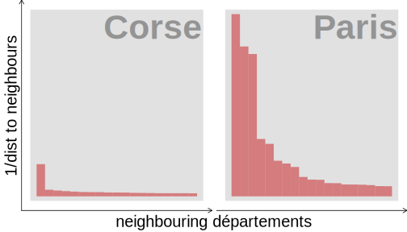
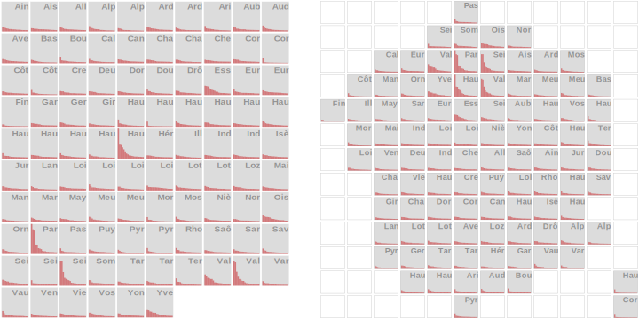
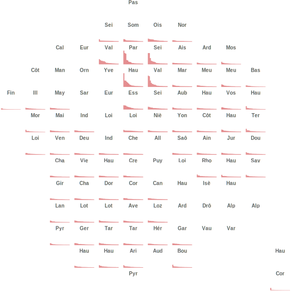

Introduction
This article demonstrates how gridmappr-generated
layouts can be used with standard ggplot2 to create different gridmap
designs. Gridmaps are encoded:
Setup and data
The following libraries are required to run this article:
# Tidyverse
library(here)
library(ggplot2)
library(dplyr)
library(readr)
library(forcats)
library(tidyr)
library(stringr)
# Spatial
library(sf)
library(geosphere)
# Gridmaps
library(gridmappr)
# Alternatives
library(geofacet)
theme_set(theme_void())The only dataset needed is the simple features file of
the 96 départements in France (france_deps) that ships with
gridmappr. Some of the graphics demonstrated do rely on a
derived dataset from this file. In the code below, we create a full
‘origin-destination’ (OD) dataset for each département pair (so 96^2 OD
pairs), calculating the straight-line distance bewteen département
centroids.
# Département names and centroids that serve as "destinations".
dests <- france_deps |>
st_drop_geometry() |> select(-name_prefecture) |>
mutate(dests="dests") |>
select(dests, d_name=name, d_x=x, d_y=y) |>
nest(.by=dests)
# Calculate pairwise distancess between OD département pairs.
france_ods <- france_deps |>
st_drop_geometry() |> select(-name_prefecture) |>
mutate(origins="origins") |>
select(origins, o_name=name, o_x=x, o_y=y) |>
mutate(dests=dests$data) |>
unnest(dests) |>
rowwise() |>
# Calculate distance and express in kms.
mutate(dep_dist=distHaversine(c(o_y, o_x), c(d_y, d_x))/1000) |>
ungroup()
rm(dests)Generate allocation and build polygon object with
make_grid()
The main function of gridmappr,
points_to_grid(), is described in the top-level package
description. The same parameterisation of that function is used here to
achieve a reasonable allocation of French départements, with selected
grid dimensions and spacers.
# Grid dimensions.
n_row <- 13
n_col <- 12
# Spacers to separate Corsica from mainland.
spacers <- list(
c(1, 11), c(2, 11), c(3, 11), c(2,10), c(1,10)
)
# Point centroids for real départements.
pts <- france_deps |>
st_drop_geometry() |>
select(area_name = name, x = x, y = y)
# Derive layout solution.
solution <- points_to_grid(pts, n_row, n_col, .6, spacers)
Now a layout has been generated, we create a corresponding polygon
object in order for the layout to be plotted. This can be achieved with
make_grid(). The function takes an sf
data frame of ‘real’ geography and returns an sf data frame
representing a grid, with variables identifying column and
row IDs (bottom left is origin) and geographic centroids of
grid squares. The gridded object can then be joined on a gridmap
solution returned from points_to_grid() in order to create
an object in which each grid cell corresponds to a gridmap allocation
position.
make_grid() takes the following arguments:
-
sf_fileAn sf object the grid is to be passed over. -
n_rowNumber of rows in grid. -
n_colNumber of columns in grid.
# Pass a grid over real départements.
grid <- make_grid(france_deps, n_row, n_col)Cells of the grid that have a département allocated to them are then
isolated by joining the gridded object (grid) on the layout
solution. Below the grid file is plotted using
ggplot2’s geom_sf
geom.
# Plot layout solution.
grid |>
left_join(solution) |>
ggplot() +
# Draw original geog.
geom_sf(data = france_deps, fill="#d9d9d9", colour="#FFFFFF", linewidth = .3, alpha=.9) +
# Draw grid cell candidates.
geom_sf(fill = "transparent", colour = "#969696", linewidth = .2) +
# Draw grid cells allocated.
geom_sf(data = . %>% filter(!is.na(area_name)), colour="#451C14", fill="#F1DDD1", linewidth = .3, alpha=.8) 
Gridmap as thematic map with geom_sf()
Since we have a simple features object for the layout with
make_grid(), it is straightforward to generate thematic
gridmaps using geom_sf()
alongside ggplot2’s standard geom layers and grammar.
In the map below the perimeter of départements is encoded as
proportional symbols with geom_point(), positioned at the
grid centroid of the cells to which each département is assigned.

# Find the cell size of grids -- for label positioning.
cell_size <- st_bbox(grid |> slice(1))
cell_width <- cell_size$xmax - cell_size$xmin
cell_height <- cell_size$ymax - cell_size$ymin
# Plot as a proportional symbol map.
grid |>
# Identify cells that form the layout.
inner_join(solution) |>
# Record and attach the perimeter of each département.
left_join(france_deps |>
mutate(perimeter=as.numeric(st_perimeter(geometry)/1000)) |>
st_drop_geometry() |>
select(name, perimeter), by=c("area_name"="name")) |>
ggplot() +
# Plot grey cell background.
geom_sf(fill="#d9d9d9", colour="#ffffff", linewidth=.5, alpha=.9) +
# Plot real geography of France as an outline.
geom_sf(data=france_deps |> mutate(is_corse=str_detect(name, "Corse")) |>
group_by(is_corse) |> summarise(),
fill="transparent", colour="#525252", linewidth=.3) +
# Plot proportional symbols.
geom_point(aes(x, y, size=perimeter), colour="#a50f15", fill="#fcbba1", pch=21, alpha=.9) +
# Plot text labels in bottom right of grid cells.
geom_text(aes(x=x+.48 *cell_width, y=y-.48*cell_height,
label=str_extract(area_name, "^.{3}")),
colour="#252525", alpha=0.5, size=2, show.legend=FALSE,
hjust="right", vjust="bottom", face="Bold") +
scale_size(guide="none")A quick explanation of the ggplot2 spec:
-
Data: We join the gridded object (
grid) on the layoutsolution, then onfrance_deps, a simple features file containing the real geographies of the départements. In themutate(), we calculate the perimeters from this file and then drop out the geometry. Note that we also record the size of each grid cell in thegridobject – this is to help with placing labels, and potentially other symbols or chart elements, on our map. -
Encoding: the proportional symbols are positioned at the
centroids of département grid cells (
x,y), sized according toperimeter. -
Marks:
geom_point()for proportional symbols andgeom_sf()for grid outline and outline of the real geography of France. We want to collapse the outline separately for Corsica and to achieve this we usegroup_by()on a derived variable identifying départements that are on Corsica (is_corse).
Gridmap as geographically-arranged geoms with
facet_grid()
In the example above, we render gridmaps in the same way as a thematic map. The gridded layout may resolve some of the occlusion were proportional symbols located in their real geographic position. However, we are not showing complex or multivariate structure, as is intended with gridmap arrangements.
There are of course many interesting data that we could represent on French départements. In the graphics below, we show the 1D distribution in the inverse distance to the neighbouring départements of Paris and Corse-du-Sud. Not a terribly exciting statistic, but fine for this illustrative article. Paris has three départements that are very close; Corse-du-Sud has one immediate neighbour on Corsica and many on the mainland that are some distance away.

We can generate small multiple faceted plots of each of these, in standard ggplot2 using faceting. Eyeballing this full graphic, there are certain départements which must be in reasonably close proximity to one another (cells containing the longer bars). Using facet_grid(), we can effect a spatial arrangement of these plots. Doing so confirms what might have been expected: Paris is distinctive, subdividing into several départements that are close in geographic space.

plot_data <- france_ods |>
left_join(solution, by=c("d_name"="area_name")) |>
rename(d_row=row, d_col=col) |> ungroup() |>
mutate(
dep_dist=if_else(o_name==d_name,10^8,dep_dist),
min_dist=min(dep_dist),
dep_dist=min_dist/(dep_dist),
) |>
group_by(d_name) |>
arrange(desc(dep_dist)) |>
mutate(rank=row_number(), is_focus=o_name==d_name) |> ungroup()
plot_data |>
ggplot() +
# Draw background map tiles (equivalent to geom_sf()).
geom_tile(
data=grid %>% st_drop_geometry() %>%
inner_join(france_grid) %>%
mutate(d_col=col, d_row=row),
aes(x = 10, y = .5),
width=20, height=1,
fill="#d9d9d9", colour="#969696", linewidth=.1, alpha=.9
) +
# Draw column charts.
geom_col(
data = . %>% filter(rank<21),
aes(x=rank, y=dep_dist), width=1, fill="#cb181d", alpha=.5) +
# Draw text labels for each département.
geom_text(data=. %>% filter(o_name==d_name), aes(x=20, y=.95,
label=str_extract(d_name, "^.{3}")),
colour="#252525", alpha=0.4, size=3.2, show.legend=FALSE,
hjust="right", vjust="top", fontface="bold") +
facet_grid(-d_row~d_col)A quick explanation of the ggplot2 spec:
-
Data: A staging dataset (
plot_data) is created. In order to bring in thecolandrowindexes for faceting as a grid, we joinfrance_odson the gridmapsolutiondataset, and on the ‘destination’ département, which are the larger reference cells in our gridmap – the bars representing inverse distances to those département, we call ‘origins’. In the mutate, we scale 1/distance between 0 and 1, using the minimum distance between any origin-destination département, after having recoded distances of 0 for départements of the sameorigin-destination. After grouping by these destinations, we rank ‘origin’ départements on their proximity (rank).
-
Encoding: Bars whose length (
y=) varies according to inverse distance and categorical position (x=) according torankproximity to the ‘destination’ département. -
Marks:
geom_col()for the bars, with the top 20 most proximate ‘origin’ départements filtered;geom_text()for drawing ‘destination’ département labels. -
Facets:
facet_grid()with a slight hack on the row variable (-row) as gridmappr’s origin [min-row, min-col] is the bottom-left cell in the grid whereas forfacet_grid()the origin is the top-left.
Using gridmap allocations with ggplot2 extensions
For a very user-friendly way of drawing gridmaps from
gridmappr-generated layouts, we are in the process of
incporporating gridmappr into the excellent tmap package.
Although there are benefits to designing gridmaps within standard
declarative ggplot2, for those preferring a slightly higher-level
interface than demonstrated here, gridmappr generated
layouts can also be used in geofacet.
Since points_to_grid() returns grid allocations in the same
data structure as required by geofacet, this is reasonably
straightforward. In the code below, we slightly reorganise the variables
in the gridmap solution file and transpose the
row column up-front, as was necessary with the
facet_grid() example. This allocation
(grid_data) is then supplied to
facet_geo().
# Slight edits to solution dataset, as required by geofacet.
grid_data <- solution |>
mutate(
# A code variable is required.
code=row_number(),
# Transpose row, due to inverse origin.
row=((max(row)+min(row))-row),
name=area_name
) |>
select(row, col, code, name) |>
# Cast name as factor and set levels, so that exactly match with plot_data.
arrange(name) |> mutate(name=factor(name))
plot_data |>
select(o_name, d_name, dep_dist, rank, name=d_name) |>
filter(rank<21) |>
arrange(name) |>
# Cast name as factor and set levels, so that exactly match with grid_data.
mutate(name=factor(name, levels=grid_data$name)) |>
ggplot() +
# Draw column charts.
geom_col(aes(x=rank, y=dep_dist), width=1, fill="#cb181d", alpha=.5) +
# Call facet function and supply 'name' and the 'grid_data'.
facet_geo(~name, grid=grid_data, labeller = as_labeller(function(x) str_extract(x, "^.{3}"))) +
theme(strip.text = element_text(face="bold", size=10, colour="#636363"))
TODO: The data in some cells do not display. I’ve investiagted the most likely causes, so more detective work needed to fix this.
Gridmap as geographically arranged geom_sfs (OD
Maps)
So far we have generated gridmap graphics as standard thematic maps
using a polygon object and geom_sf(); and as geographically
arranged plot objects (glyphmaps) with facet_grid().
Combining both approaches – placing standard thematic maps with a
further geographical arrangement (using facet_grid()) –
allows the creation of OD Maps. With
this map-within-map layout, we can encode distances to ‘destination’
départements not using bars, but with cells of ‘origin’ départements
arranged geographically.

The ggplot2 spec for creating the OD map:
-
1. Data:
- Take the staged dataset and join twice on the
solutiondataset and then on the geometry data, either real (france_deps) or gridded (france_grid). - The first join, on
d_name. The map in the figure is a D-OD map. The larger (focus) grid cells correspond to ‘destination’ départements; the smaller cells are ‘origin’ départements coloured according to distances from the larger (focus) cells. - The second join , on
o_name, mirrors this approach, except of course the shared column on which the datasets are joined. - The third join is on the
geometrydata, and we here using the ‘origin’o_nameas the joining variable. Note that we join either onfrance_grid, for smaller maps in gridded space, orfrance_depfor smaller maps with real geography. - Finally in the
mutate()we specially identify the département in focus (is_focus), ‘destinations’ in this case.
- Take the staged dataset and join twice on the
-
2. Encoding:
- Gridmap cells are coloured according to the distances
(
fill=dist). - Text labels for destination (focus) département are drawn in the
top-right corner of larger cells. Note that the coordinate space here is
that from the
gridmapdataset and so thex,ylocation of département labels are derived from the bounding box object (bbox_grid).
- Gridmap cells are coloured according to the distances
(
-
3. Marks:
geom_sf()for drawing the small gridcell maps;geom_text()for drawing the labels;geom_tile()for drawing the background cells. -
4. Scale:
scale_fill_distiller()for a continuous colour scheme using the ColorBrewerRedspalette. -
5. Facets:
facet_grid()for effecting the map-within-map layout.
Further Reading
Beecham, R. (2025) ‘Visualization for Social Data Science’, CRC Press, ISBN: 9781032259710.
Beecham, R. and Slingsby, A. (2019) ‘Characterising labour market self-containment in London with geographically arranged small multiples’, Environment and Planning A: Economy and Space, 51(6), pp. 1217–1224. doi: 10.1177/0308518X19850580.
Wood, J., Dykes, J. and Slingsby, A. (2010) ‘Visualisation of Origins, Destinations and Flows with OD Maps’, The Cartographic Journal, 47(2), pp. 117–129. doi: 10.1179/000870410x12658023467367.